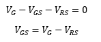
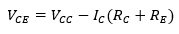
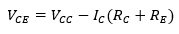

JFET - Polarización por divisor de tensión
La configuración del divisor de voltaje aplicada a amplificadores con
transistores BJT también se aplica a amplificadores con FET, la
construcción básica es exactamente la misma, pero el análisis de cada
una es muy diferente.
Para los amplificadores JFET, IG = 0 A, pero la magnitud de IB para
los BJT puede afectar los niveles de corriente y voltaje de DC tanto
en los circuitos de entrada como en los de salida.
Cabe recalcar que IB proporcionó la relación entre los circuitos de
entrada y de salida para la configuración de divisor de voltaje para
el BJT, en cambio VGS hará lo mismo en la configuración a JFET.
Es la forma más segura de saber que el punto de funcionamiento o
trabajo Q va a estar en el punto que se estabilice. La forma de
calcular es exactamente igual que los transistores que se le aplica
Thevening.
Estructura
Fuente: Teoría de circuitos y dispositivos electrónicos, pág. 422
Para el análisis en DC redibujamos la red de la figura anterior como
se muestra en la siguiente figura:
Fuente: Teoría de circuitos y dispositivos electrónicos, pág. 422
Vemos que todos los capacitores incluyendo el Capacitor de desacople
(CS), han sido reemplazados por un circuito abierto equivalente. A
demás, se separarón en dos fuentes equivalente la fuente VDD con el
objeto de permitir una separación mayor de las regiones de entrada y
salida de la red.
Debido a que IG = 0A, la Ley de corriente Kirchhoff requiere que IR1 =
IR2 y que el circuito equivalente en serie que aparece a la izquierda
de la figura pueda utilizarse para encontrar el nivel de VG. El
voltaje VG, igual que el voltaje a través de R2, puede encontrarse si
se utiliza la regla del divisor de voltaje de la siguiente manera:
Si aplicamos la ley de voltaje de Kirchhoff en el sentido de las
manecillas del reloj en lazo como se indica en la anterior figura,
obtenemos:

Sustituyendo el voltaje de la resistencia de la fuente por su
equivalente en corriente, obtenemos:
Ahora, sustituyendo la ecuación resultante de VRS dentro de la formula
de VGS, nos da como resultado la siguiente formula:
El resultado es una ecuación que todavía incluye las mismas dos
variables que aparecen en la ecuación de Shockley: VGS e ID.
Las cantidades VG y RS están fijas por la construcción de la red.
Entonces, si se selecciona ID para ser igual a cero, en esencia se
esta estableciendo en algún lugar sobre el eje horizontal. Puede
calcularse la localización exacta mediante la simple sustitución de ID
= 0 mA y encontrando el valor resultante de VGS de la siguiente
manera:
El resultado especifica que siempre que grafiquemos la ecuación de VGS
= VG - ID*RS, si seleccionamos ID = 0 A, el valor de VGS para la
gráfica será de VG. El punto recién determinado aparece en la sguiente
figura:
Fuente: Teoría de circuitos y dispositivos electrónicos, pág. 423
Para encontrar otro punto, empleamos ahora el hecho de que cualquier
punto sobre el eje vertical VGS = 0 V y resolvemos para el valor
resultante de ID.
Una vez que están calculados los valores estables de IDΩ y de VGSQ, el
análisis restante de la red puede desarrollarse de la manera usual.
Fórmulas

 Voltaje colector-emisor

Corriente de saturación>
Voltaje de corte
Voltaje colector-emisor

Corriente de saturación>
Voltaje de corte
 Voltaje de base con respecto a tierra
Voltaje de base con respecto a tierra
 Voltaje de colector con respecto a tierra
Voltaje de colector con respecto a tierra
 Voltaje emisor
Voltaje emisor

 Voltaje de base - tierra
Voltaje de colector - tierra
Voltaje de emisor
Voltaje de base - tierra
Voltaje de colector - tierra
Voltaje de emisor